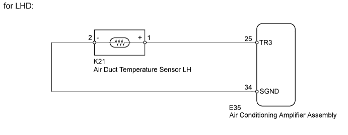
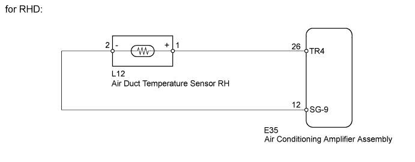
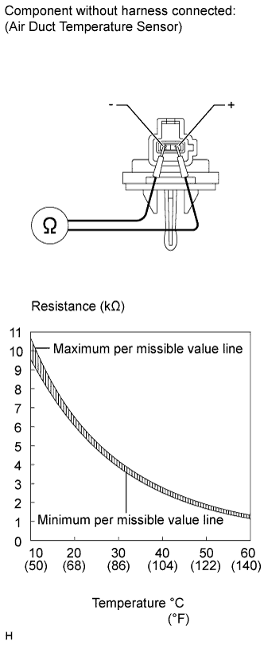
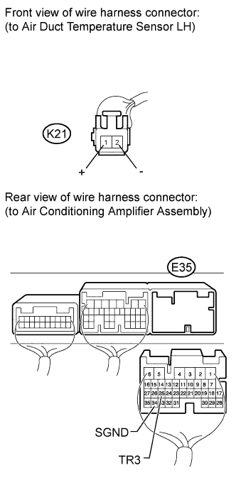
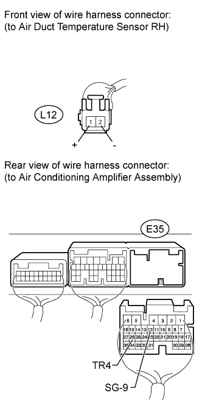

DTC B1467/67 Rear Air Foot Duct Sensor Circuit on Driver Side |
| DTC Code | DTC Detection Condition | Trouble Area |
| B1467/67 | An open or short in the air duct temperature sensor LH*1 or RH*2 circuit. |
|


| 1.READ VALUE USING INTELLIGENT TESTER (AIR DUCT TEMPERATURE SENSOR) |
Use the Data List to check if the air duct temperature sensor LH*1 or RH*2 (for driver side) is functioning properly.
| Tester Display | Measurement Item/Range | Normal Condition | Diagnostic Note |
| Foot Duct Sensor (Rear D) | Min.: -12.7°C (9.14°F) Max.: 76.55°C (169.79°F) | Actual air duct temperature sensor (for driver side) displayed | Open in the circuit: -12.7°C (9.14°F) Short in the circuit: 76.55°C (169.79°F) |
|
| ||||
| OK | ||
| ||
| 2.CHECK AIR DUCT TEMPERATURE SENSOR |
 |
for LHD
Remove the air duct temperature sensor LH (Click here).
for RHD
Remove the air duct temperature sensor RH (Click here).
Measure the resistance according to the value(s) in the table below.
| Tester Connection | Condition | Specified Condition |
| 1 (+) - 2 (-) | at 10°C (50°F) | 9.4 to 10.5 kΩ |
| at 15°C (59°F) | 7.5 to 8.3 kΩ | |
| at 20°C (68°F) | 6.0 to 6.5 kΩ | |
| at 25°C (77°F) | 4.5 to 5.2 kΩ | |
| at 30°C (86°F) | 3.8 to 4.2 kΩ | |
| at 35°C (95°F) | 3.1 to 3.4 kΩ | |
| at 40°C (104°F) | 2.5 to 2.8 kΩ | |
| at 45°C (113°F) | 2.0 to 2.3 kΩ | |
| at 50°C (122°F) | 1.6 to 2.0 kΩ | |
| at 55°C (131°F) | 1.3 to 1.6 kΩ | |
| at 60°C (140°F) | 1.1 to 1.4 kΩ |
| Result | Proceed to |
| OK | A |
| NG (for LHD) | B |
| NG (for RHD) | C |
|
| ||||
|
| ||||
| A | |
| 3.CHECK HARNESS AND CONNECTOR (AIR CONDITIONING AMPLIFIER - AIR DUCT TEMPERATURE SENSOR) |
 |
for LHD
Disconnect the K21 sensor connector.
Disconnect the E35 amplifier connector.
Measure the resistance according to the value(s) in the table below.
| Tester Connection | Condition | Specified Condition |
| E35-25 (TR3) - K21-1 (+) | Always | Below 1 Ω |
| E35-34 (SGND) - K21-2 (-) | ||
| E35-25 (TR3) - Body ground | Always | 10 kΩ or higher |
| E35-34 (SGND) - Body ground |
 |
for RHD
Disconnect the L12 sensor connector.
Disconnect the E35 amplifier connector.
Measure the resistance according to the value(s) in the table below.
| Tester Connection | Condition | Specified Condition |
| E35-26 (TR4) - L12-1 (+) | Always | Below 1 Ω |
| E35-12 (SG-9) - L12-2 (-) | ||
| E35-26 (TR4) - Body ground | Always | 10 kΩ or higher |
| E35-12 (SG-9) - Body ground |
|
| ||||
| OK | ||
| ||